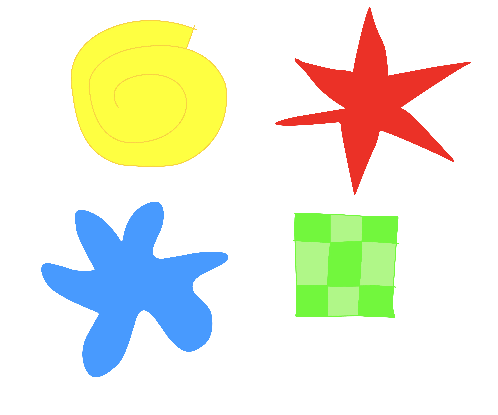

Kiki, Bouba, and Beyond
(About the appearance of words)
Maybe you’ve heard of the “kiki/bouba” effect — it’s a classic psycho-linguistics experiment that explores the relationship between nonsense words and abstract shapes. The psychologist Wolfgang Kohler observed the phenomenon in the late 1920s, using the made-up words “takete” and “maluma.”
With this experiment Köhler demonstrated an inherent human tendency to match certain sounds to shapes — as most people considered the angular shape “takete” and the rounder one “maluma.”
Köhler’s original study only tested Spanish speakers. In the early 2000s, Vilayanur Ramachandran and Edward Hubbard, two researchers at the University of California San Diego, wanted to see if the findings applied to a broader group of people. This time using the words “bouba” and “kiki,” they tested American college undergraduates and Tamil speakers in India.

They found overwhelming majorities (95 percent to 98 percent) in both groups who agreed on which shapes were “kiki” and which were “bouba.” The results suggested a universality to the effect that the Köhler study originally documented. That is, most people — regardless of language or cultural background — agree the spiky, jagged shape is “kiki,” while the blobby, curvy one is “bouba.”
The science behind it
Why so many of us are in agreement on these words isn’t entirely clear, but there are some theories. In a 2014 article in the academic journal Language and Speech, Annette D’Onofrio, an assistant professor of linguistics at Northwestern University, attributed the phenomenon to the shape our mouths make when we say “kiki” and “bouba.” With “bouba,” our lips are rounded and our oral cavity is open; whereas our lips become tight and constrained when we pronounce “kiki.” When spoken aloud, the word “kiki” uses more energy, as seen in spectrograms.
Studies continue to explore the kiki/bouba effect and what we can learn from it. In her doctoral research at Emory University, Kelly McCormick, a cognitive scientist, asked, “What is the underlying neurological processing for feeling like something is a good match?” She keeps a list of words whose meanings she feels relate to their pronunciation. For example, she said, “I love askew. I think about askew all the time. It sounds like what it means.”
Different languages vary in how the sounds of words convey meaning. Japanese is one that is rich in sensory vocabulary, McCormick said. There are terms for the rolling sound of thunder (goro goro, ごろごろ), the flickering light off a pond (kira kira, きらきら) and the slippery but firm feeling of a fish’s scales (tsuru tsuru, つるつる). “The language you speak affects the way you think,” she said.
What we can use this knowledge for
Aditya Shukla, who writes about psychology on his site Cognition Today, sees opportunity in applying the kiki/bouba phenomenon in other ways. “As humans, we biologically evolved to take in information from all our senses,” he said. “The kiki/bouba phenomenon shows how we find patterns in sensory information, and how one sense can help another.”
In addition to writing, Shukla also plays guitar. “Kiki/bouba demonstrates something musicians and artists constantly use,” he said. “They are always understanding the world in abstract and multi-sensorial ways.”
Thinking about the “acoustics” of the two words, and how we describe sensations that are hard to identify, could help us share something previously unexplainable.